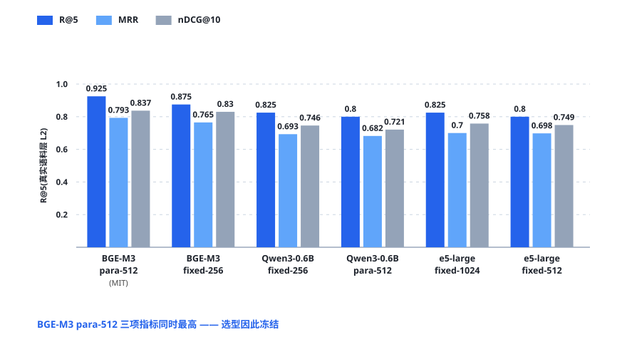
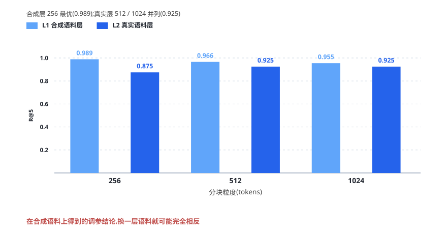
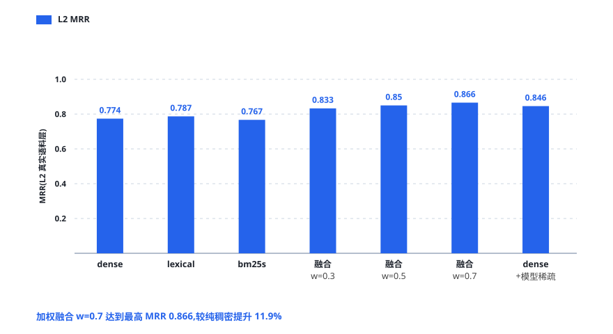
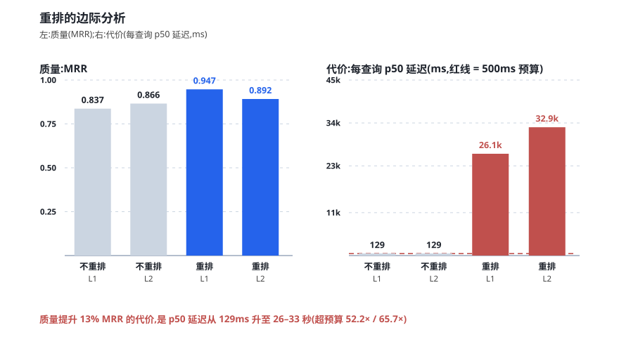
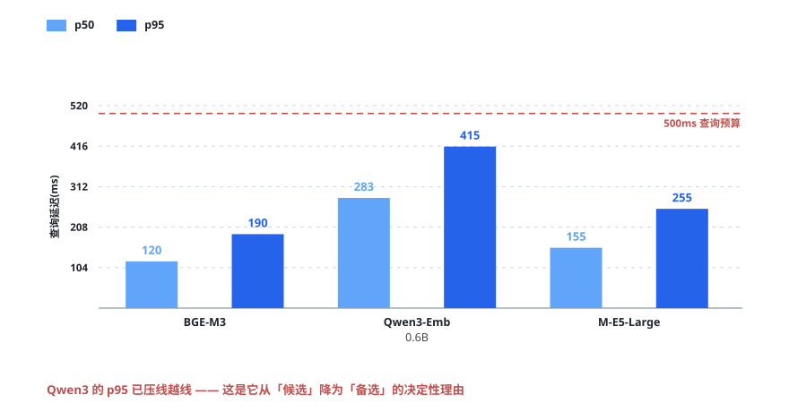
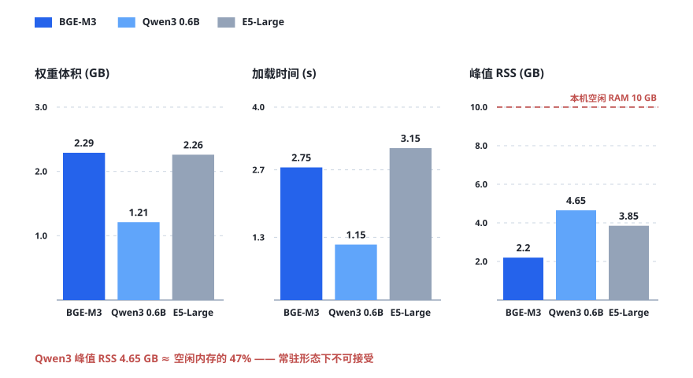

1 研究问题
dsh-auto-memory 在每个请求边界向模型注入「参考尾注」。JS 宿主完成身份、授权、版本与投递治理，Python 侧车负责语义计算：接收授权分页同步的全库语料，维护可重建的派生向量索引，并在 context_push 时计算语义分数、产生激活建议。
生产约束决定了本研究与通用信息检索基准的差异，也决定了几乎所有结论都会与「跑一个公开榜单」相左：
- 纯 CPU 推理。侧车与宿主同机常驻，生产形态没有 GPU；测试机为 Ryzen 7 9700X（8C/16T），31 GB 内存，评测时空闲约 10 GB。
- 查询延迟预算 500ms（p95）。它来自 5 秒
context_pushdeadline 的 1/10 安全裕度——不是性能目标，是硬边界。 - 语料形态特殊。约 176 条真实记忆记录，以短笔记为主，夹杂少量 runbook 长文，且持续增长。
- 中英混写，且含大量对抗结构：代码、路径、错误码；同主题易混对（hard negatives）；新旧更正对（supersede）；跨工作区同文镜像。
- 许可约束。默认分发路径禁用非自由许可的模型权重。
据此，我们提出四个问题：
| 编号 | 问题 | 落点 |
|---|---|---|
| RQ1 | 三候选模型中谁应成为默认嵌入提供者？各模型在七类查询上的强弱项与资源代价如何？ | §4 |
| RQ2 | 在模型自带 tokenizer 的 id 空间内，256 / 512 / 1024 硬窗、段落对齐、重叠五种策略孰优？ | §5 |
| RQ3 | 纯稠密、纯词法、bm25s、加权融合、RRF、模型稀疏各自的价值？最优融合权重与 RRF k？ | §6 |
| RQ4 | 交叉编码重排与聚类在质量–延迟、可解释性上的收益，是否值得其成本？多跳检索是否需要图？ | §7 |
2 实验设置
2.1 硬件与软件
| CPU | AMD Ryzen 7 9700X（8C/16T）· torch 2.13.0+cpu · 16 线程（interop=1） |
|---|---|
| 内存 | 33.4 GB 总量（评测时空闲约 10 GB） |
| GPU | RTX 4070 Ti SUPER 16GB 在机但全程未用（对齐生产形态） |
| 软件 | Python 3.10.11 独立 venv · transformers 5.15.1 · numpy 2.0.2 · bm25s 0.3.10 · scikit-learn 1.7.2 |
2.2 候选模型
权重按 pinned revision 下载，并逐文件校验 sha256。池化方式以各仓库 1_Pooling 配置为准，查询侧前缀按官方模板。
| 模型 | 许可 | 权重体积 | 维度 | 池化 | 查询侧约定 | 上下文上限 |
|---|---|---|---|---|---|---|
| BAAI/bge-m3 | MIT | 2.29 GB | 1024 | CLS | 无前缀（官方 FAQ） | 8192 |
| Qwen/Qwen3-Embedding-0.6B | Apache-2.0 | 1.21 GB | 1024 | last-token | Instruct: …\nQuery:（仅查询） | 32768 |
| intfloat/multilingual-e5-large | MIT | 2.26 GB | 1024 | mean | query: / passage: | 512（硬上限） |
2.3 评测方法
七类查询按真实使用分布加权：中英互查、混写、代码/路径/错误码、hard-negative 双子、supersede 新旧对、跨工作区镜像、多 chunk 长文，另设 60 条同作者同时代风格的干扰项，用于防止风格泄漏导致的虚高。
3 语料构建
3.1 L1：受控合成压力层
| 类别 | 记录数 | 查询数 | 考察点 |
|---|---|---|---|
| zh→en | 10 | 10 | 中文查英文文档 |
| en→zh | 10 | 10 | 英文查中文文档 |
| 中英混写 | 8 | 8 | 混写语义 |
| 代码 / 路径 / 错误码 | 10 | 10 | 栈迹、绝对路径、npm 与 exit code |
| hard-negative 双子 | 20（10 对） | 18 | 同主题不同细节（延迟预算对、digest 作用域对、两种冷却对） |
| supersede 新旧对 | 14（7 对） | 8 | correction 应压过旧声明 |
| 跨工作区镜像 | 12（6 对） | 6 | 同文异库，scope 门硬断言泄漏 = 0 |
| 多 chunk 长文 | 8 | 18 | 400–1300 token runbook，答案在深层段落 |
| 干扰项 | 60 | — | 同作者同时代风格，防风格泄漏 |
3.2 L2：真实语料层
| 来源 | episodes | 说明 |
|---|---|---|
| DSH 锚定日志记录 | 128 | 生产格式原样（脱敏后） |
| 画像 heading 块 | 94 | 五个 MEMORY.md，Markdown / RAW_JSON 去重 |
| 真实会话 episode | 29 | 用户轮次 + 助手结论合并；跨文件重复去重；剔除续接产物 |
4 模型选型
L2 真实语料层的结果是选型的决定性依据——因为只有在真实语料上，模型间的差距才真正拉开。

| 模型 | 策略 | R@1 | R@5 | MRR | nDCG@10 | p50/p95 (ms) | 峰值 RSS |
|---|---|---|---|---|---|---|---|
| bge-m3 | para-512 | 0.675 | 0.925 | 0.793 | 0.837 | 129 / 241 | 2.21 GB |
| bge-m3 | fixed-1024 | 0.675 | 0.925 | 0.791 | 0.836 | 135 / 230 | 2.21 GB |
| bge-m3 | fixed-256 | 0.650 | 0.875 | 0.765 | 0.830 | 131 / 219 | 2.05 GB |
| qwen3-0.6B | fixed-256 | 0.600 | 0.825 | 0.693 | 0.746 | 317 / 508 | 3.35 GB |
| e5-large | fixed-1024 | 0.600 | 0.825 | 0.700 | 0.758 | 158 / 288 | 3.94 GB |
| e5-large | fixed-512 | 0.600 | 0.800 | 0.698 | 0.749 | 151 / 291 | 3.94 GB |
三个可分离的结论：
- 精度：BGE-M3 在真实层 R@5 领先次名（qwen3-0.6B fixed-256 与 e5-large fixed-1024 并列 0.825）10 个百分点，在 L1 合成层领先得更明显。
- 延迟：BGE-M3 p95 为 241ms，在 500ms 预算内留有余量；qwen3-0.6B 的 p95 达 508ms，已压线甚至越线。
- 许可：BGE-M3 为 MIT，满足默认分发路径的许可约束。
e5-large 还有一条结构性缺陷：其上下文硬上限为 512 token，而本系统的 runbook 类长文常超过该长度，导致跨语言检索能力直接塌陷（表内跨语命中率 0.60，其余两者为 1.00）。
5 分块策略
这是整份研究中最重要、也最反直觉的一组结果。

| 粒度 | L1 R@5 | L2 R@5 | L2 易混对错误率 | L2 chunk / 记录 |
|---|---|---|---|---|
| 256 | 0.989 | 0.875 | 0.111 | 1.454 |
| 512（段落对齐） | 0.966 | 0.925 | 0.074 | 1.088 |
| 1024 | 0.955 | 0.925 | 0.037 | 1.000 |
合成的压力语料在构造时就偏好「小窗 + 精准匹配」——每一条记录都是为某个查询定制的。真实记忆却不是这样：一条记录往往承载一个完整结论，窗口切得太小反而把结论切碎。我们把这一现象命名为分块反转，并据此确立一条工程纪律：
在合成语料上得到的分块结论，不可直接外推到真实语料。
最终选择段落对齐的 512 窗口（para-512，无重叠），理由是它在真实层取得并列最高 R@5 的同时，chunk 膨胀率最低（1.088），即索引体积与检索开销最经济。
6 检索通道与融合

| 通道 | R@1 | R@5 | MRR | nDCG@10 | 易混对错误率 |
|---|---|---|---|---|---|
| dense（纯稠密） | 0.675 | 0.925 | 0.774 | 0.812 | 0.074 |
| lexical（自研词法） | 0.750 | 0.825 | 0.787 | 0.814 | 0.148 |
| bm25s（库） | 0.725 | 0.825 | 0.767 | 0.798 | 0.148 |
| 加权融合 w=0.3 | 0.800 | 0.875 | 0.833 | 0.860 | 0.111 |
| 加权融合 w=0.5 | 0.800 | 0.950 | 0.850 | 0.874 | 0.111 |
| 加权融合 w=0.7 | 0.800 | 0.950 | 0.866 | 0.898 | 0.074 |
| RRF（k=60） | 0.725 | 0.950 | 0.813 | 0.853 | 0.074 |
三点值得单独说明。
其一，纯词法的 R@1 反超纯稠密（0.750 vs 0.675）。原因很直接：真实记忆里有大量精确锚点——参数名、错误码、包名、绝对路径——这类查询上词法通道是零误差命中，而稠密向量会把它们平滑掉。但词法的易混对错误率是稠密的两倍（0.148 vs 0.074），说明它区分不了「看起来一样但语义不同」的配对。
其二，加权融合同时改善精度与鲁棒性。w=0.7 时 MRR 从 0.774 提升到 0.866（+11.9%），同时易混对错误率维持在与纯稠密相同的 0.074。这不是「用一个指标换另一个指标」的折中，而是两个通道的误差模式互补。
其三，bm25s 库与自研词法复刻结果完全一致。这意味着生产实现不需要新增任何依赖——融合的全部收益都可以在不引入第三方库的前提下取得。这是 D6 决策中「零新依赖」四个字的依据。
6.1 模型稀疏：零边际模型成本的最强单通道
| 层 | 通道 | R@5 | MRR | 易混对错误率 | supersede |
|---|---|---|---|---|---|
| L2 | model-sparse 单独 | 0.950 | 0.816 | 0.037 | — |
| L2 | dense + model-sparse w=0.7 | 0.975 | 0.846 | 0.074 | — |
| L1 | model-sparse 单独 | 0.852 | 0.686 | 0.296 | 0.750 |
| L1 | dense + model-sparse w=0.7 | 0.977 | 0.826 | 0.111 | 0.625 |
模型稀疏表示与稠密表示共用同一个编码器，因此边际模型成本为零。它在真实语料层单独即胜过纯稠密（R@5 0.950 vs 0.925），融合后取得全场最高 R@5 = 0.975。已列为 D6 的修正案备选，待标定期重评。
7 下游增强
7.1 交叉编码重排：质量很好，但超预算 52–66 倍

| 层 | 方案 | MRR | p50 (ms) | p95 (ms) | 超预算(按 p50) |
|---|---|---|---|---|---|
| L1 | 不重排 | 0.837 | ~129 | ~189 | — |
| L1 | bge-reranker-v2-m3 | 0.947 | 26 093 | 37 449 | 52.2× |
| L2 | 不重排 | 0.866 | ~129 | ~200 | — |
| L2 | bge-reranker-v2-m3 | 0.892 | 32 857 | 43 809 | 65.7× |
重排确实有效：L1 的 R@5 推到 1.000，L2 的易混对错误率降到全场最低的 0.037。但在纯 CPU 常驻的形态下，它是不可用的——p95 延迟超预算 52–66 倍，意味着一次 context_push 要等四十多秒。
于是 D9 的结论不是「不用重排」，而是「延迟后置」：把重排从默认路径移出，保留在量化或 GPU 可用时启用的开关位。在质量提升 13% 与延迟劣化两个数量级之间，这是唯一理性的选择。
7.2 聚类：凝聚聚类可用，HDBSCAN 完全失效
| 算法 | 参数 | 簇数 | NMI | 噪声率 | 双子同簇率 |
|---|---|---|---|---|---|
| 凝聚（余弦 / 平均链接） | 阈值 0.3 | 125 | 0.916 | 0 | 0.696 |
| 凝聚 | 阈值 0.5 | 39 | 0.721 | 0 | 0.870 |
| HDBSCAN | mcs=3 | 7 | 0.576 | 0.618 | 0.435 |
| HDBSCAN | mcs=5 / 8 | 0 | 0.000 | 1.000 | 0 |
HDBSCAN 在单例为主的记忆语料上完全失效——噪声率 62% 到 100%。这不是参数没调好，而是算法前提不成立：密度聚类假设簇内样本稠密，而记忆记录天然稀疏、每条都近乎独立。
凝聚聚类的自举稳定性达到 0.995（阈值 0.3 × 5 次 80% 重采样），可作为 D8 的影子能力启用。值得注意的是 ARI 只有 0.171 而 NMI 高达 0.916——这个分歧本身是诊断信号：它说明簇的规模与真值不符，但归属基本正确。我们按 NMI 判定可用，并把这个分歧写进设计说明，避免后来者误读。
7.3 多跳检索：8 个探针，缺口不需图存储
| 探针 | 问题类型 | 第一跳在 top10 | 第二跳（旧记录）在 top10 |
|---|---|---|---|
| mh01–mh04, mh06, mh07 | 更正 → 被纠正的原始假设 | ✓ | ✓ |
| mh05 | tie-break 冻结 → 被替代做法 | ✓ | ✗ |
| mh08 | 回退层 → 其 BM25 参数 | ✗ | ✗ |
8 个探针中 6 个被完整覆盖，2 个有缺口。关键在于：这 2 个缺口都出现在融合层就能补齐的位置——两端点各自的分数都不低，只是排序时被其他候选挤下去了。因此 D10 的裁决是 skipped-by-benchmark：不引入图存储，缺口交给融合层特征处理。
8 效度威胁与局限
- 语料规模。L2 只有 251 条 episode / 40 条人工查询，绝对量偏小；结论的方向性比幅度更可信。
- 单一硬件。全部延迟数据来自同一台机器，跨机器外推需要保留安全系数。
- 人工查询的构造性。40 条查询由人工编写，可能比自然发生的问题更「工整」，从而高估检索难度或低估。
- 模型时效。权重已 pinned 并逐文件校验 sha256，结论只对应当前 revision。
- 许可。本研究淘汰 e5-large 的判据含许可维度，其他场景下该模型的表现可能另有结论。
9 结果解读
9.1 为什么是 BGE-M3
三个可分离的因素共同作用：多语言对齐质量（跨语命中率 1.00，e5-large 仅 0.60）、上下文容量（8192，足以容纳整条 runbook）、以及CPU 友好的前向成本（p95 241ms）。三者缺一，它都不会是默认选择。


9.2 「上下文依赖度」是分块反转的机制
一条记录的语义完整度越高，把窗口切小造成的损失就越大。合成语料的每条记录都是「一条记录对一条查询」，上下文依赖度接近 0；真实记忆的每条记录都承载一个完整结论，上下文依赖度高。分块反转不是数据噪声，而是这一指标的直观体现。
9.3 融合权重的经济学
w 从 0.3 升到 0.7，精度单调上升且鲁棒性不退化。这说明两个通道的误差模式互补而非重叠：稠密错在「视觉相似但语义不同」，词法错在「字面相同但语境不同」。当两者的错误集合近乎不相交时，加权融合的收益上限就远高于单通道调优。
9.4 重排：为什么「延迟后置」是唯一理性选择
质量收益 13% MRR，延迟劣化两个数量级。在任何有延迟预算的系统里，这都不是一个可以「权衡」的问题——它直接被预算排除。保留开关位而不是删除，是因为硬件条件会变。
10 冻结决策
全部结论已冻结为 11 项工程决策，并驱动生产实现。
| 编号 | 决策 | 一句话证据 |
|---|---|---|
| D1 | 默认模型 = BGE-M3（MIT） | 双层全一；L2 领先 12.5pt；p95 241ms |
| D2 | 分块 = para-512-noov | 真实层最优；小窗优势不外推 |
| D3 | 检索 = NumPy float32 精确余弦 | 40MB / 万 chunk，延迟余量 2× |
| D5 | 淘汰 e5-large；qwen3 备选 | 跨语 0.60；判别优但压线 |
| D6 | 融合 = 稠密 0.7 + 词法 0.3 | L2 MRR +11.9%，零新依赖 |
| D6⁺ | 模型稀疏为修正案备选 | L2 R@5 0.975 全场最高，标定期重评 |
| D8 | 聚类 = 凝聚 0.3 影子 | NMI 0.916 / 稳定性 0.995；HDBSCAN 不适用 |
| D9 | 重排 = 延迟后置 | 质量 +13% MRR 但超预算 52–66× |
| D10 | 图 = skipped-by-benchmark | 75% 双端点已覆盖，特征层可补 |
| D11 | 激活 = 双阈值 + 滞回，影子校准默认 | active 帧逐字段过校验器 |
| D6⁺实施 | D6 / D11 已进生产 worker | hybrid 三分量影子候选；correction 硬抑制；real-smoke 双向 top1 |
11 结论
本研究回答了四个问题，并给出三条我们认为可以外推到其他记忆系统的结论：
- 合成语料上的调参结论不可外推——分块反转是这一论断最直接的证据。
- 互补通道的融合优于任何单通道调优——精度与鲁棒性可以同时改善，前提是两者的错误模式不重叠。
- 「不可用」和「不该用」是两回事——重排不是没用，是超预算；把结论写成「延迟后置」而不是「放弃」，保留了硬件变化时的重新评估路径。
写在后面的话
「博学之，审问之，慎思之，明辨之，笃行之。」
最让我们警醒的，不是 BGE-M3 领先了 12.5 个百分点，而是「分块偏好在两层语料之间发生反转」这个结果。它说明：在合成数据上得到的调参结论，很可能换一个语料就完全反过来。
于是这套系统的每一处默认值，都不是拍脑袋定的。它们来自两组互相不信任的语料、约九十个评测单元、以及被证伪的捷径和超预算的方案。
记忆是用户的，代码也是。每一处判断都交得出证据：哪条记录被召回、为什么被召回、注入之后有没有被读到。
dsh-auto-memory 项目组 · 2026